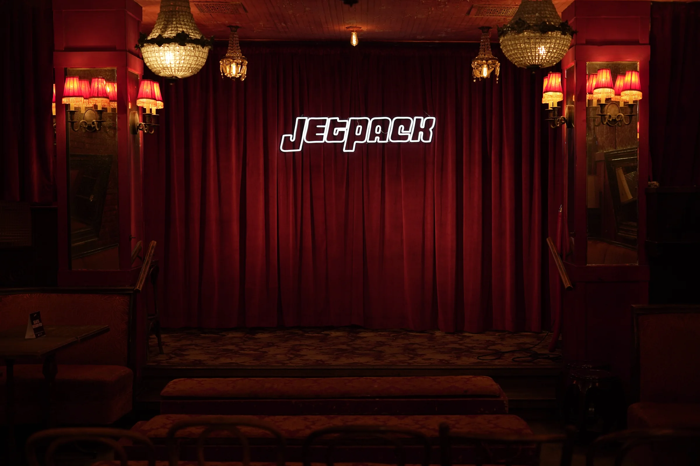
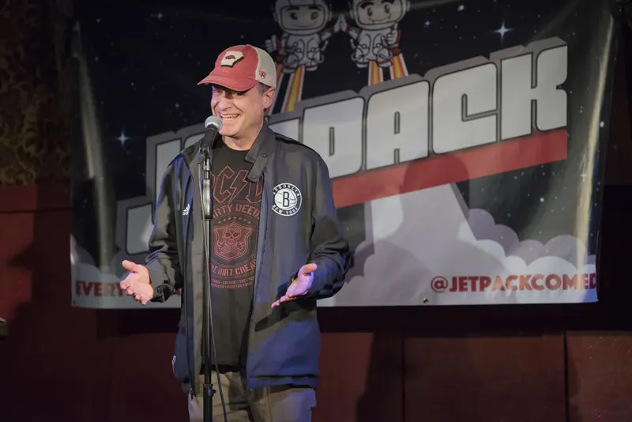
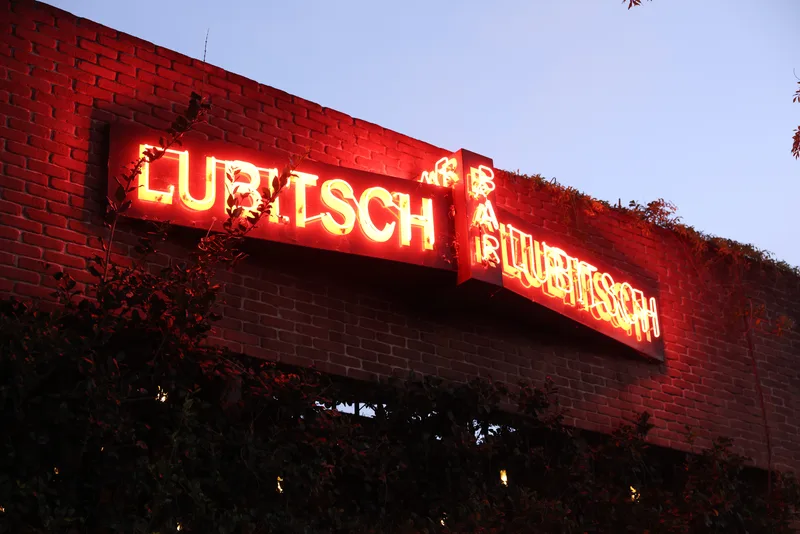

The anti-club
comedy club
Big standup in an intimate showroom. Friday nights at Bar Lubitsch.
Upcoming shows
Every Friday · Doors 8pm · Show 8:30





Stand-up comedy every Friday in West Hollywood
Every week, 6–8 handpicked comedians perform in a 70-seat velvet cocktail bar. No two-drink minimum. No tourist trap. Just sharp, curated comedy fifteen feet from your drink.
The people, they love us
“My face was literally sore the next day from laughing so much. I’ve been to Jetpack three times and the lineup is consistently killer. Highly recommend!”
“Jetpack comedy hits the spot. What an awesome venue and what a spectacular show. The comics working this room are spitting fire. Non stop laughs at a hip bar.”
“They always manage to book hilarious comedians. I’ve seen Garfunkel and Oates, Demetri Martin, Sarah Silverman, Maria Bamford, and even, one time, Bob Odenkirk showed up to replace someone.”
“Jetpack is LA comedy perfection. Consistent quality line-up, a badass intimate venue, and dancing after the show. I’m almost hesitant to leave a review just to keep them a secret.”
Know before you go
Yes! The venue serves alcohol, so there is a strict 21+ age requirement.
No, there is not a drink minimum but it would be great for you to get a drink to support Bar Lubitsch - we love them for letting us put this show on!
Nope! We sell out often so we recommend getting tickets online in advance. If the show is listed as Sold Out on the web, then we will not have extra tickets sold at the door.
You better believe it is! You can do wheelies, drift... whatever you want. We love you.
Where is Jetpack located?
In the back room of beautiful Bar Lubitsch.
7702 Santa Monica BlvdWest Hollywood, CA 90046
Every Friday · Doors 8pm · Show 8:30pm
What’s up with parking? Lots of free parking on Santa Monica Blvd and the surrounding streets, or there is a paid lot at the corner of Spaulding.
